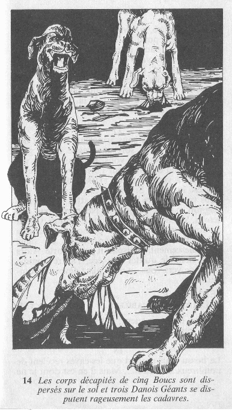

L'odeur abominable qui règne dans la pièce vous soulève le cœur, et vous
cloue sur place. La pièce elle-même, taillée dans le roc, n'a rien de
particulièrement remarquable. Mais les corps décapités de cinq boucs sont
dispersés sur le sol et trois DANOIS GÉANTS se disputent rageusement les
cadavres.

A votre arrivée, ils se tournent vers vous, furieux d'avoir été
interrompus dans leur festin. Leurs gueules écument et ils grognent avec
hargne. L'un des molosses bondit sur vous, et vous devez le combattre.
DANOIS GÉANT
HABILETÉ: 7 ENDURANCE : 5
Si vous êtes vainqueur, continuez ici.